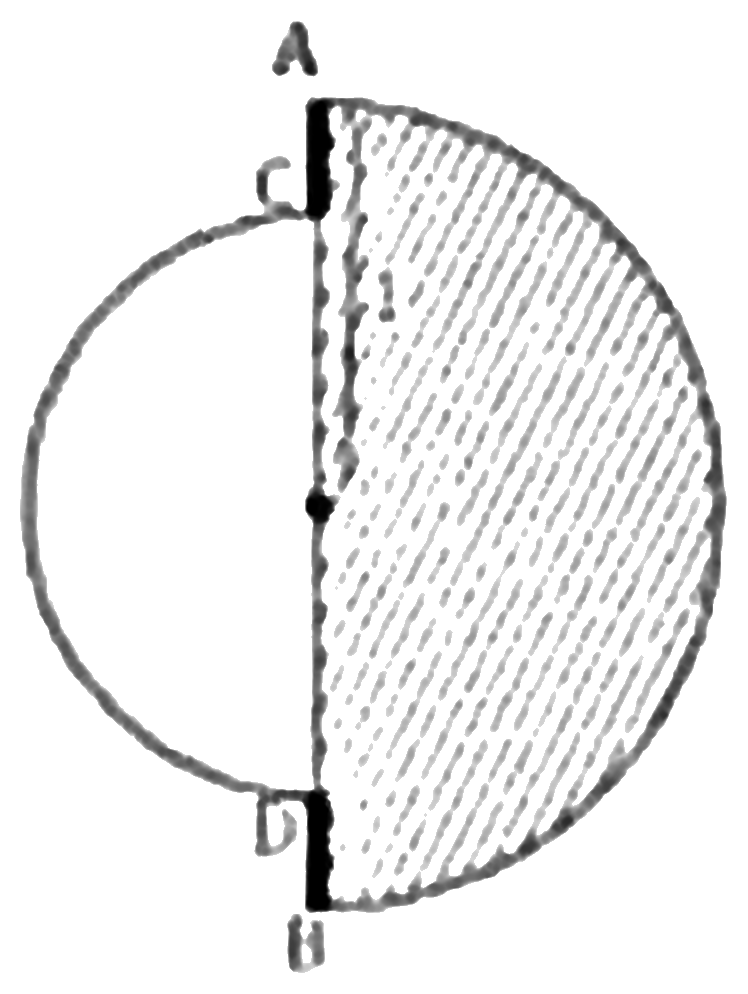

נתון: |6x + 6y| = |−2x − 2y|
מה מהבאים נכון בהכרח?
הצגת הפתרון
התשובה הסופיתתשובה (1)x ו־y מספרים נגדיים
דרך הפתרון והסבר
6|x + y| = 2|x + y| ⇒ |x + y| = 0 ⇒ x = −y.
מוקשים נפוצים
|t| = 0 רק אם t = 0.
נבדקהפתרון תואם את מפתח התשובות של הספר.
נתון: |6x + 6y| = |−2x − 2y|
מה מהבאים נכון בהכרח?
התשובה הסופיתתשובה (1)x ו־y מספרים נגדיים
6|x + y| = 2|x + y| ⇒ |x + y| = 0 ⇒ x = −y.
|t| = 0 רק אם t = 0.
נבדקהפתרון תואם את מפתח התשובות של הספר.
לאחר הנחה של 45 שקלים שילמה גיל x עבור נעליים חדשות שרכשה. מהו אחוז ההנחה אותו קיבלה גיל?
התשובה הסופיתתשובה (1)4500x + 45
המחיר המקורי x + 45. אחוז ההנחה = 45x + 45 · 100 = 4500x + 45.
לחשב אחוזים מהמחיר המקורי, לא מהמחיר המוזל.
נבדקהפתרון תואם את מפתח התשובות של הספר.

בסרטוט שלפניכם שני חצאי מעגלים בעלי מרכז משותף בנקודה O. רדיוסו של חצי המעגל המקווקו הוא 1 ס"מ. נתון: השטח המקווקו גדול פי 2 מהשטח הכהה⚠.
בהסתמך על נתונים אלו ונתוני הסרטוט, מהו סכום האורכים של שני הקווים המודגשים (בס"מ)?
התשובה הסופיתתשובה (3)√2·(√2 − 1)
חצי המעגל המקווקו (רדיוס 1) שטחו π2, וגדול פי 2 מחצי המעגל הקטן ⇒ πr²2 = π4 ⇒ r = 1√2. כל קו מודגש = 1 − 1√2, ושניהם יחד 2 − √2 = √2(√2 − 1).
השטח הכהה הוא חצי מהשטח המקווקו.
נבדקהפתרון תואם את מפתח התשובות של הספר.
הנחתי שהשטח הכהה הוא חצי המעגל הקטן; התוצאה תואמת את המפתח.
x, y ו־z הם מספרים טבעיים השונים זה מזה. נתון: x³ · y⁴ · z = 25 · 63 · 65 · 99
x · y = ?
התשובה הסופיתתשובה (4)15
25 · 63 · 65 · 99 = 3⁴ · 5³ · 7 · 11 · 13. y⁴ = 3⁴ ⇒ y = 3, x³ = 5³ ⇒ x = 5, z = 1001. xy = 15.
לפרק לגורמים ראשוניים.
נבדקהפתרון תואם את מפתח התשובות של הספר.
שני אוטובוסים נוסעים מתל אביב לירושלים הלוך ושוב החל מ־6:00 בבוקר ועד 21:00 ללא הפסקה. האוטובוס הראשון נוסע במהירות של 60 קמ"ש והאוטובוס השני נוסע במהירות 90 קמ"ש. אם המרחק בין תל אביב לירושלים הוא 90 ק"מ, כמה פעמים במהלך היום נפגשו האוטובוסים בתחנת המוצא בתל אביב?
התשובה הסופיתתשובה (2)2
אוטובוס 1: הלוך־חזור 3 שעות ⇒ בת"א ב־9, 12, 15, 18, 21. אוטובוס 2: הלוך־חזור 2 שעות ⇒ ב־8, 10, 12, 14, 16, 18, 20. משותף: 12:00 ו־18:00.
הלוך־חזור לוקח פי 2 מהנסיעה בכיוון אחד.
נבדקהפתרון תואם את מפתח התשובות של הספר.

בסרטוט שלפניכם משולש ABC. נתון: AD ⊥ BC.
לאור נתונים אלו ונתוני הסרטוט, מהם שיעורי ה־x של הנקודה D?
התשובה הסופיתתשובה (4)לא ניתן לדעת
שיעור ה־x של D היה 3 רק אם BC מקביל לציר x – וזה לא נתון.
מהסרטוט זה נראה אופקי, אבל אסור להסתמך על מראה.
נבדקהפתרון תואם את מפתח התשובות של הספר.
לכל מספר שלם וחיובי x הוגדרה הפעולה $ כך: $(x) = מספר הפעמים שהמספר הראשוני 2 מופיע בפירוק של x לגורמים ראשוניים⚠.
מה מהבאים נכון בהכרח?
התשובה הסופיתתשובה (3)$(x) + 1 = $(2x)
הכפלה ב־2 מוסיפה גורם 2 אחד ⇒ $(2x) = $(x) + 1.
הכפלה ב־2 מוסיפה גורם 2 אחד בלבד.
נבדקהפתרון תואם את מפתח התשובות של הספר.
עידן בחר מספר 3 ספרתי שכל ספרותיו זהות. לירון בחרה מספר הגדול ב־115 מהמספר שבחר עידן. ראם בחר מספר הגדול ב־1110 מהמספר שבחר עידן. אם נחלק את כל אחד מהמספרים הללו ב־15, מי מהם יניב את שארית החלוקה הגדולה ביותר?
⚠ "ב־5"/"ב־15" בסוף השאלה מטושטש.
התשובה הסופיתתשובה (4)לכולם יש את אותה שארית החלוקה
ddd = 111d. 1110 מתחלק ב־15, אבל 115 ≡ 10 (מודולו 15).
לבדוק בספר אם החילוק הוא ב־15 או ב־5.
דורש בדיקההמקור לא חד או סותר את המפתח. התשובה המוצגת היא לפי מפתח הספר.
לפי הקריאה (חילוק ב־15) לירון שונה מהאחרים. מפתח הספר: לכולם אותה שארית – נכון לחילוק ב־5 (115 ו־1110 מתחלקים ב־5). לבדוק בספר.
נתון: a הוא מספר טבעי הגדול מ־1. x הוא מספר ראשוני. y = xᵃ
כמה מחלקים שונים יש ל־y?
התשובה הסופיתתשובה (2)a + 1
מחלקי xᵃ: 1, x, x², …, xᵃ ⇒ a + 1.
לספור גם את 1 ואת xa עצמו.
נבדקהפתרון תואם את מפתח התשובות של הספר.
בכמה מספרים תלת־ספרתיים ספרת המאות שווה למכפלה של ספרת האחדות בספרת העשרות?
הערה: זו אותה שאלה כמו מקבץ 20 שאלה 8.
התשובה הסופיתתשובה (4)23
כמו בשאלה 20-8: 1 + 2 + 2 + 3 + 2 + 4 + 2 + 4 + 3 = 23.
לספור גם את 1 · h.
נבדקהפתרון תואם את מפתח התשובות של הספר.
אין במקבץ הזה שאלות שמתאימות לסינון.